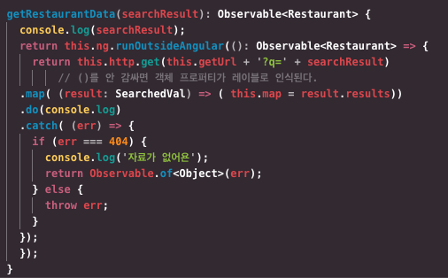
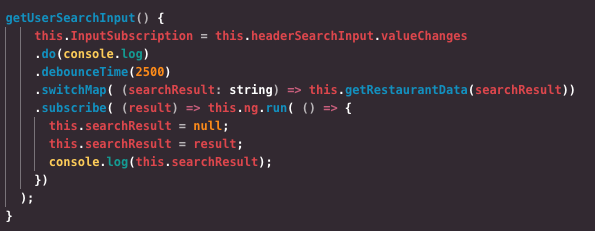
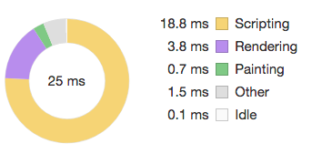
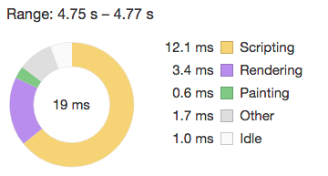

불필요한 변화감지를 막고자 NgZone을 사용하는데 실제로 변화감지를 일으키는 부분에 적용해봤다.
컴포넌트 트리 안에 있는 모든 컴포넌트는 트리거에 따른 변화를 감지한다. 오늘 변화 감지를 확인한 곳은 헤더 컴포넌트의 검색창이었다. 입력칸에 검색어를 입력하면 HTTP API로 DB 데이터에 있는 검색결과를 받아 오는데 이 과정에서 컴포넌트의 변화 감지가 발생한다.
검색창의 값(검색어)이 옵저버블 이란 인터페이스를 활용하고 있다. 옵저버블 타입을 가지면 서버에 있는 데이터를 계속해서 요청하고 받을 수 있다.
검색창에 글자를 입력할 때마다 서버로 Http Get이 이뤄지는데, 이 때 특정 시간까지 글자를 모아 서버에 검색어를 전달한다. 검색어를 전달하면 서버에서 검색결과를 주는데 이 과정에서 변화감지가 많이 일어나고 있었다.
NgZone.runOutsideAngular()
변화감지를 줄이려면 검색결과가 나오기 전까지 검색 과정의 작업을 앵귤러가 인식하지 못해야한다. 앵귤러 바깥 공간에서 검색어를 서버에 전달하고, 검색결과를 다시 앵귤러 공간으로 가지고 오는 방법이 runOutsideAngular다.

이 메소드를 검색결과를 가져오는 메소드에 적용시켜봤다. 앵귤러 바깥에서 처리된 값을 다시 앵귤러 영역(zone)에 적용시키려고 subscribe구독 시 run()메소드를 사용했다. 이 안에서 검색결과 참조값을 프로퍼티에 할당했다.
- 변화 감지를 줄이려고 객체를 참조하지 않고 변하지 않는 값(immutable)을 사용하기도 한다. immutable한 값을 사용하면 참조로 인한 예기치 않은 변동성을 예방할 수 있고, 값을 새로 복사할 때만 변화감지가 발생하기 때문이다.

이렇게 넣어본 다음 개발자 도구를 활용해 차이점이 있는지 확인해봤다. 확인 결과, 검색어를 입력을 마친 순간까지는 차이가 없었고, 검색 결과를 받아오는 부분에서 미세한 차이가 발생했다.
 
작업 시간만을 보면 스크립트 부분에서 6ms(0.006)의 차이가 생겼다. 반복해서 렌더링을 체크해봤을 때도 6ms와 비슷한 값이 나왔다.
느낀 점
생각보다 미세하게 차이가 나서 변화감지의 차이를 좀더 드러낼 수 있는 방법을 찾아봐야겠다. 그리고 컴포넌트를 기능 별로 좀더 세세하게 분리시켜야겠단 생각이 들었다. 헤더의 검색어 입력 이벤트를 감지해야 하는 컴포넌트가 사실 거의 없다. 검색 컴포넌트를 따로 만들어서 헤더 컴포넌트에게만 @Input을 주고,헤더 컴포넌트만 검색 컴포넌트의 변화를 감지하는 방법을 알아봐야겠다.
브라우저의 fps가 너무 높게 나왔다. 적정 프레임이 60프레임으로 알고 있는데, 600(…뭐지)이 넘는 fps가 나왔다. 개발자 도구 퍼포먼스 탭에서 결과를 보니 도큐먼트 전체에 브라우저의 레이어 작업이 적용되고 있었다. 레이어 작업을 최소화하는 방법을 알아봐야겠다.